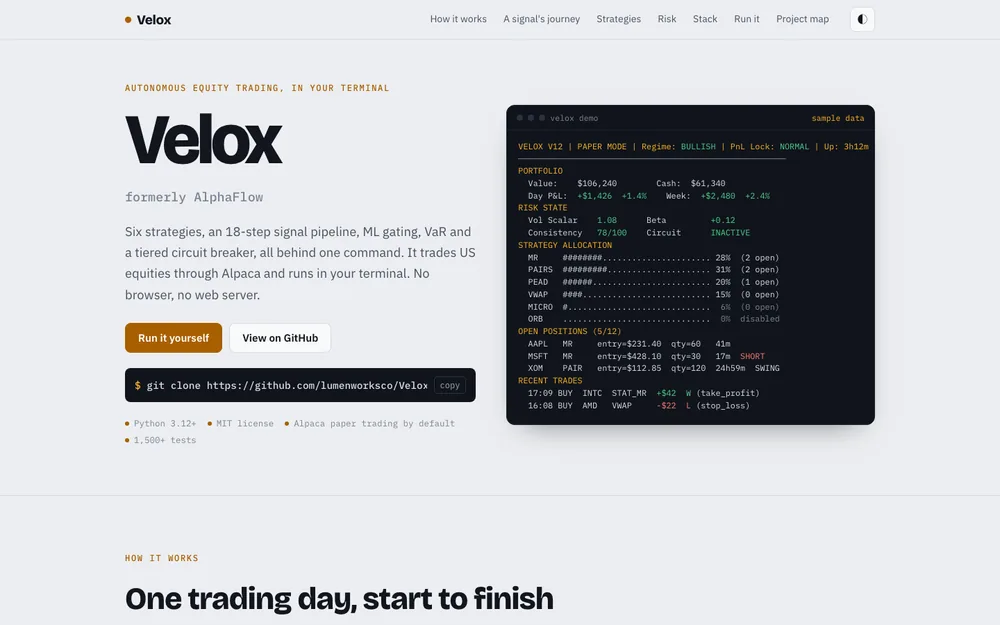

Python · CLIActive
Velox
A terminal-native autonomous equity trading system on Alpaca. Six strategies feed an 18-stage signal pipeline with ML confidence gating, a unified exit orchestrator, real-time VaR and a tiered circuit breaker, all driven from a single velox command. Paper trading by default.
- 1,540+ tests
- 6 strategies
- 0.947 AUC ML gate
- Rich terminal dashboard